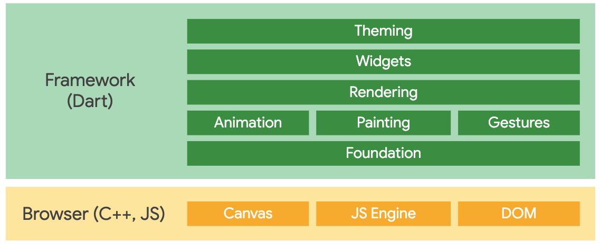
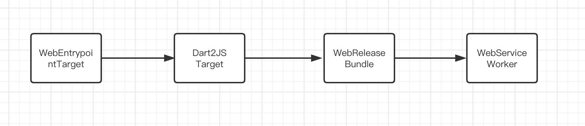
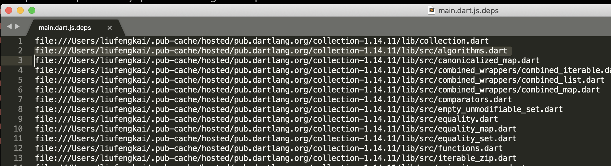
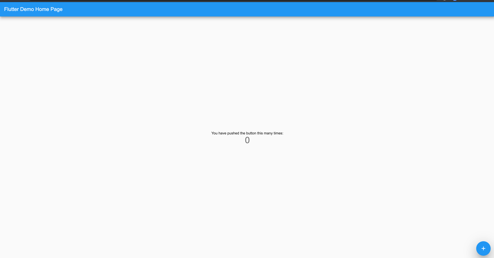

本篇文章你会学到
- Flutter Web 的编译流程
- dart compiler 使用方案
- compiler 模块实现分析（next chapter）
前言
Flutter for Web 是 Flutter 框架在 Web 平台的支持方案，在很长一段时间一直是独立于 Flutter 主分支之外进行独立开发的，直到 19 年九月才合入主分支，目前仍在 Flutter 的 beta channel 之中（早期使用的案例可以我之前的调研报告、文章）。下图为 Flutter For Web 的实现方案，之前已经写过文章分析过了：

与之前 preview 版本较为复杂的配置流程（flutter 所有库都要切到 web branch 之中）不同，目前版本的 FlutterWeb 可以被融入了 flutter_tools 处理流程之中了，并且 release 模式也能够提供完整的可独立运行的 dump 出的 web 程序。
本篇文章我们就来分析 FlutterWeb 完整的编译处理流程，原本这篇文章也包含对
dart2js部分的实现分析，但是由于篇幅过长不太容易在有一篇文章之中解释清楚。因此打算单独开一个关于Dart编译器设计的系列文章，从内部kernel出发到，前端的front_end的实现，compiler模块的构成，包含从算法基础到实现引申的全部内容敬请期待。
FlutterWeb 编译流程
整体结构
熟悉 flutter_tools 的读者应该对如何在编译流程之中插入 web 实现的方案并不陌生，flutter_tools 的命令利用对应的处理框架进行了比较有效的解耦。在 lib/src 文件夹下增加了 web 的 实现 。具体新增的文件列表如下图：
├── bootstrap.dart
├── chrome.dart
├── compile.dart
├── devfs_web.dart
├── web_device.dart
├── web_runner.dart
├── web_validator.dart
└── workflow.dart
主要的几个文件内容的功能如下：
- bootstrap` 提供了一个简单的生成模板生成编译流程的插入入口。
chrome主要是处理了开启启动 chrome 浏览器的相关功能。devfsweb 版本的 devfs 功能和默认的差不多，主要是用于debugg模式之下的调试控制资源，以及开了个 server 处理 web 部分的文件请求（其实用 release 模式 + 关掉跨域检查可以直接使用纯 web 侧的功能）。web_device，web_runner将 Chrome mock 成一个启动设备。compile模块处理了 web 的编译的处理流程的简单封装。
编译流程
通过对 compile 文件的继续分析，实际上的 BuildTarget 都存储在 lib/src/build_system 之中 处理 。关于 build target 的实现方案，其实和 Dart Compiler 内部的 compile target 的设计方案有异曲同工之妙（不过因为 compiler 里面的部分内容比较私货，如果可以打通编译链的话也有一定的好处）。
其中包含四个主要的 Target :

四个流程都会在 .dart_tools 的构建目录生成这些模块的临时文件，并且在最后才会讲最后可用的文件归入 build/web 的目录之中。
WebEntryPointer
顾名思义这个 Target 生成了 Web 应用程序的 Dart 侧入口，这个只是在运行 FlutterWeb 能用到的流程。通过简单地字符串拼接生成了类似如下的入口：
import 'dart:ui' as ui;
import 'package:myapp/main.dart' as entrypoint;
Future<void> main() async {
if (true) {
await ui.webOnlyInitializePlatform();
}
entrypoint.main();
}
这里把我们编写的 Flutter 部分的 Main 入口作为 entrypointer 引入重新封装了启动部分，自动帮忙增加了 wrapper 来初始化 web 平台的一些初始化操作。这个思路也可以借鉴到开发其他的部分诸如开发 AOP 部分，mock 一个 wrapper 的部分来进行一些初始化操作，当然直接在 flutter_tools 植入 Transformers 是最为合适了。
这其中生成了 web_entrypoint.stamp 模块记录了生成的输入以及输出的主模块文件路径。
Dart2JS
Dart Compiler 模块最重要的一个产出使用就是 dart2js 的功能。这个 Compiler 的最初的设计模式其实是为了多个编译器后端的设计所产出的，曾经可选的编译器后端有 dart (dart2dart), dartino (dart 在 arduino 上的实验方案)，dvm (llvm backend) 等等，不过这些项目都在 2015 ~ 2016 年左右因为各种原因所取消了。
纵观 Dart Compiler 的编译器后端设计，其实还是有个不错的架构设计，多 Backend 的输出也比较符合业界习惯（比如主要 backend 在 js 上的 Haskell 方言 PureScript，本身有非常多的其他 backends）。不过可惜的是 Dart 的大多数 backend 都被砍掉了，目前只有 dump 到 js 的方案保存，这也只能说是非战之罪吧，并非是那些 backends 不靠谱，而是工程量太多实际情况也很难做。就如卷首语一样，关于 Dart Compiler 的话题还有很多可写可聊的，之后也会出专题系列文章来
final ProcessResult result = await globals.processManager.run(<String>[
globals.artifacts.getArtifactPath(Artifact.engineDartBinary),
globals.artifacts.getArtifactPath(Artifact.dart2jsSnapshot),
'--libraries-spec=$specPath',
if (dart2jsOptimization != null)
'-$dart2jsOptimization'
else
'-O4',
if (buildMode == BuildMode.profile)
'--no-minify',
'-o',
outputFile.path,
'--packages=$packageFile',
if (buildMode == BuildMode.profile)
'-Ddart.vm.profile=true'
else
'-Ddart.vm.product=true',
if (csp)
'--csp',
for (final String dartDefine in parseDartDefines(environment))
'-D$dartDefine',
environment.buildDir.childFile('main.dart').path,
]);
这些复杂的都不谈，先来关注 Dart2JS 这个 Build Target，其实其中的核心部分就是这段。这里的处理很直球的直接 call process 了，如果能直接调用 Dart Compiler 的 dart2js target 其实也能完成这样的实现。这里创建了一个新的 process 来运行 dart2js ，处理的部分包括部分 Flutter Framework 的部分、.packages 索引到的模块（即我们依赖的第三方程序），以及我们实例程序之中的 Dart 文件。并将所有的 codegen 产物生成了一个文件 main.min.js 文件。
其实这里应该还没有做好足够的优化，因为其实可以筛选所有实际使用到的 Dart 文件这样最终生成的产物的 size 也会有很大程度的缩减，不过由于获取 imports 目前可能也需要 compiler 进行预处理，可能会消耗编译时间换取空间，具体如何实现可能还要具体评估。
不过目前涉及到哪些 Flutter Framework 的部分是通过 flutter/bin/cache/flutter_web_sdk/libraries.json 这个文件是通过 libraries.yaml 来进行描述的，其中索引到了生成的具体模块和文件。
在完成了这个步骤之后程序生成了 main.min.js 以及对应的 mian.min.js.map 等对应的 map 文件，除此以外还 dump 出了类似下图的 main.dart.js.deps ，其中记录了 dart2js 过程索引到的所有 dart 文件的绝对路径：

以及它的路径压缩的简单版本 dart2js.d。
Web Release
重要的 codegen 部分已经过去了，Web Release 的部分主要的部分就是读取 assets 模块的文件数据，dump 生成了 flutter_assets.d 记录了所有的文件路径。并且将之前生成的 main.dart 入口，生成的 js 部分，以及 assets 下的相关资源。最后所有的资源路径都会统一被记录到 web_assets.d 文件之中。
此时的主要的 Target 都做完了，我们现在生成的目标程序（位于 build/web）已经足够直接运行了。实时证明 dump 出来的文件并不需要 Dart 的 server 再做什么处理了，因为之前所说的 devfs 也不过就是开了个普通的 http server 而已。
哪怕在 build/web 直接使用或是通过关闭 Chrome 的本地跨域检查都可以直接使用：
# py3
python -m http.server 8000
# just run in chrome (mac ver.)
open /Applications/Google\ Chrome.app/Contents/MacOS/Google\ Chrome --args --allow-file-access-from-files

WebServiceWorker
最后的 WebService Worker 流程也非常简单，直接通过字符串拼接大法生成了 ServiceWorker 用于生成 PWA 应用，其中生成了每个文件到 MD5 的 map 信息：
final Map<String, String> uriToHash = <String, String>{
for (File file in contents)
// Do not force caching of source maps.
if (!file.path.endsWith('main.dart.js.map'))
'/${globals.fs.path.relative(file.path, from: environment.outputDir.path)}':
md5.convert(await file.readAsBytes()).toString(),
};
生成结果类似于：
const RESOURCES = {
"/index.html": "61b7719527881ef63ebfbdfb6c63c83d",
"/main.dart.js": "41066c43b06e985269386e7a2356a89c",
"/manifest.json": "90429e89de58cfca8f025ed8b460774a",
"/assets/LICENSE": "1a80be6c5724a31e6f9c9e06dba53b63",
"/assets/AssetManifest.json": "2efbb41d7877d10aac9d091f58ccd7b9",
// ...
};
总结
本篇文章讲解了 FlutterWeb 的过程是如何融合到原有的 Flutter 编译流程，并且详细梳理了 dart2js 以及在全链路的 compile targets 上是如何进行的资源处理代码生成，通过这些知识我们对多端一体化的设计方案有了一定程度的祛眛。不过从 FlutterWeb 的角度来看，也只能如同管中窥豹的一瞥 Flutter、Dart 的 Compiler 流程与设计方案。之后还会推出针对 Dart Compiler 编译器设计的相关文章，敬请期待。